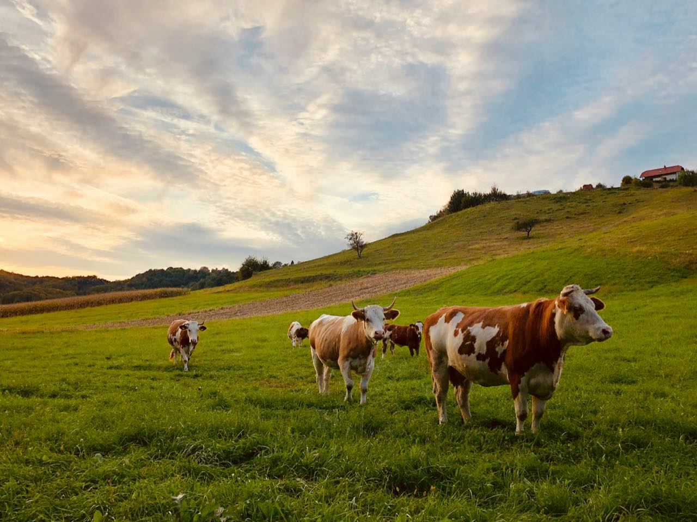
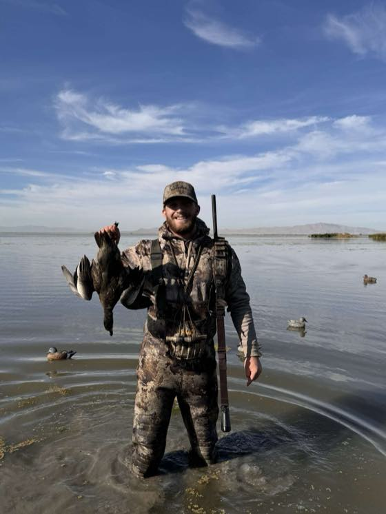
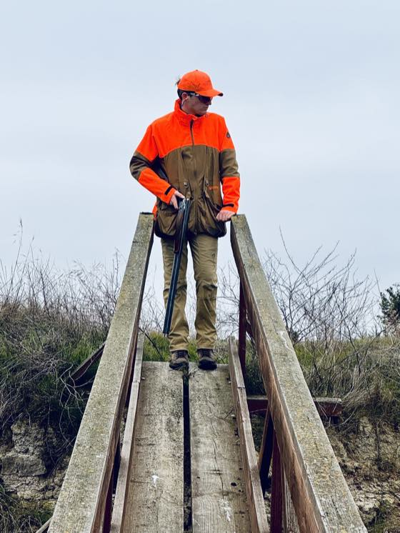
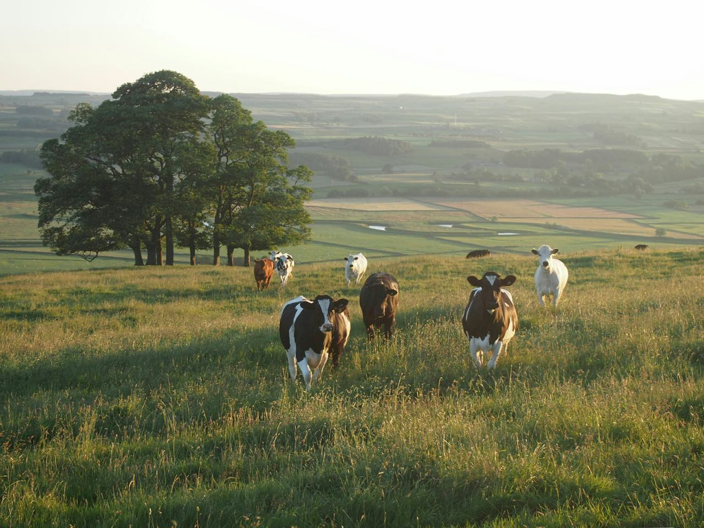
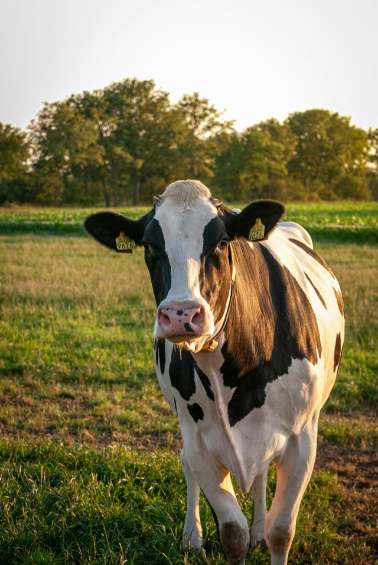

Drone solutions
Thermal drones that count, check, and move your cattle, day or night, so your crew's hours go to the work.

Thermal drones that count, check, and move your cattle, with your cow records on your phone. We're taking on development partners now.
Thermal drones that count, check, and move your cattle, day or night, so your crew's hours go to the work.
Your cows, pastures, and paperwork in one place, on your phone or computer.
Run hunts too? Hunting ranches have their own page, with their own demos.
See the hunting pageArches Labs is Parker DeYoung and Parker Piombo. One of us built drone vision systems for the U.S. Air Force; the other grew up working a ranch in Northern California. We'd rather build this with ranchers than for them.

Built computer-vision systems for U.S. Air Force drones and secure, locally hosted AI. Published at EMNLP, a leading AI conference, on benchmarking AI agents and making them more reliable. Hunts waterfowl and hikes.

Grew up hunting and working on a ranch in Northern California, so he knows how hard the work is. Competes in sporting clays, studies business, and brings experience from Deloitte. A lifelong hunter with a love of land management.

A full count can eat a day horseback. A thermal drone flight could count cows, calves, and bulls by pasture before breakfast, and tell you who's missing.
Outline them once. Flight lines are spaced so nothing is missed or counted twice.
It launches while the ground is cool, when warm cattle stand out best.
Back and forth at a steady height, over open grass, brush, and creek bottoms.
Cows, calves, and bulls, by pasture. One off by herself is flagged, not guessed.
The count is held up to what you turned out, so you know who's missing and where to look.
How long does a full count take you now?
Each calf against the group, °F
A sick calf often runs a fever before it looks sick, and a hot week can wear on the whole herd. The thermal flight that counts them could catch both early.
Each animal is read against the rest, in the same light and wind.
It's marked with a photo and where it's standing, so it's easy to pull.
The treatment goes on its record, and the next flight checks it's back to normal.
How do you catch a sick one now, and how early?
Calving season means a check every couple of hours, all night. A drone could fly the round for you and wake you only when a cow needs you.
Every two hours, or whatever you set. It flies the calving pasture all night.
It launches from a dock. No headlights, no walking through the cows.
Bedded cows show up warm and still. It counts them as it goes.
A heifer alone by the fence, up and down, gets tagged.
Where she is and a live view, on your phone. Head out, or keep watching.
It stays overhead till you get there, then docks. The calving goes on her record.
A trailer at the loading chute at 1 AM gets flagged and recorded.
Coyotes show up on thermal too, so you see where they're coming in.
Time, place, and video for the sheriff or the brand inspector.
Where your cattle are is your business. It's never sold.
What does a night in calving season look like on your place?
Cattle on the road are a liability, and a dry tank in August can't wait. A morning flight could check the fence and every tank, so the day starts with a list, not a search.
After a storm or on a schedule, it follows your fence and looks in every tank on the way.
Wire down, a gate open, cattle out, a tank running low.
A photo and a pin on your phone, so you know what to bring and where to drive.
Mark it fixed. The next check confirms it held.
How do you find out cattle are out, or a tank's gone dry?

Cow 9626 BredHer calves' weaning weights, lb
Every cow's calves, shots, weights, and preg checks in one place, ready when you sell.
He's paired with his mother. You confirm it.
Calving, shots, and weaning weights build up year over year.
Bred again, and ranked against the rest of your cows.
Where do your cow records live now, and what do you wish they told you?
✓ Sent to Ray: move the pairs Thursday, north gate
Which herd is in which pasture, how long each one has rested, and when to move, on one board.
Days in each pasture are counted, so a move doesn't sneak up on you.
Only pastures that have rested long enough are offered.
The move goes on the board and to everyone's phone.
How do you decide when to move cattle?
Gathering a pasture takes riders and a morning. A drone could work the herd from behind, ease them through the gate, and count every head on the way.
Pick the pasture and the gate. It flies out and gets behind the herd.
Side to side and slow, the way a good dog would. They drift together toward the gate.
Every cow and calf is counted as they go through, so you know the number matches.
A pair hung up in the brush? It goes back for them, then heads home.
How many riders does it take to move a pasture, and how long?
We're taking on cattle operations as development partners. It starts with 30 minutes on how you run your place.
Seven questions. The last one matters most.